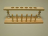

| Material: | ||||
| Clave | Material | Cantidad | Maletín | |
|
I-RA-AZULBROM-100 |
1 | A |
|
|
I-RA-000000CU-150 |
1 | D |
|
|  | I-L3-00GR1300 |
1 |
Almacén 1 |
|
|
I-L3-00PI0300 |
1 | N |
|
|
I-L3-00PI4000 |
1 |
H |
|
|
I-RV-PIPETAGR-002 |
1 | Q |
|
|
I-NT-000P7130-03B |
2 | E |
|
|
I-RV-TUBOENSA-012 |
2 | 14 J - 20 L - 16 M |
|
| I-RV-0TUBOENL-001 |
1 | J |
||
| Ver práctica 0 de química | -- |
1 | -- |